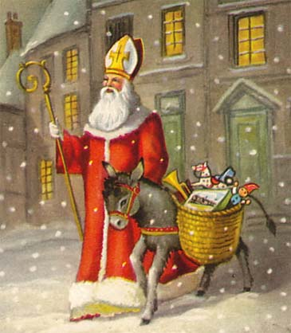

|

Yule significa rueda en anglosajón. En esta fecha la rueda del nacimiento, la muerte, y la resurrección se completa. Yule es el primer Sabat menor en la rueda del año.
La oscuridad de las noches domina la mitad del año hasta el Solsticio de invierno, el 21 de Diciembre. Es entonces cuando damos paso a la celebración del nacimiento de la Luz. En la noche más larga y oscura nace la nueva luz, el niño divino. El sol entra en el laborioso y alegre Capricornio.
En la mitología celta el Rey Roble gobierna durante la mitad luminosa del año. En Yule conquista al Rey Acebo para poder reinar hasta verano. Momento en el cual los dos reyes volverán a encontrarse. El Rey Roble y el Rey Acebo son fuerzas opuestas personificadas en Litha y Yule, y por ello se complementan. El pájaro representativo del Rey Acebo es el petirrojo, el del Rey Roble, el reyezuelo.
La celebración del solsticio de invierno está asociada con el nacimiento de varios héroes o dioses como Dioniso, Mitra, Perseo , Apolo, Horus... Jesús sería uno más en la lista. Es la celebración del Dios-Sol, el hijo de Dios, el niño divino...
En la antigua Roma se celebraba desde el 17 al 23 de este mes el festival de Saturnalia, dedicado a Saturno, en el que se descansaba por haber terminado las labores agrarias del invierno. Descansaban incluso los esclavos quienes recibían raciones extra de comida y en ocasiones se intercambiaban el rol con sus amos.Saturno se equiparaba al Cronos prehelénico, dios de la edad de oro en la que no existían las clases sociales. Se celebraban grandes banquetes y se repartían regalos entre amigos y familiares. Se decoraban las casas con plantas y se hacían festejos bajo la luz de las antorchas para simbolizar el fin del periodo más oscuro del año y el nacimiento del Sol Invictus el 25 de diciembre.
Los padres de la iglesia decidieron que el nacimiento de Jesús coincidiera con estas fechas para intentar eclipsar el culto de Mitra que profesaban los romanos y las fiestas de Yuletide pertenecientes a celtas y sajones.
Podemos reconocer hoy día las costumbres paganas en símbolos que aún nos rodean como el tronco de navidad, el ritual de fertilidad bajo el muérdago, el acebo, el encendido de velas y luces para ahuyentar la oscuridad, la decoración del árbol...
El tronco de navidad era una pieza central en la celebración pagana. También se dice que los celtas ya adornaban sus árboles en esta época para asegurar la perennidad de los frutos de cara al invierno. Antiguamente el tronco de navidad era un tronco de madera, no de chocolate, y se dejaba que ardiera toda la noche entre hierbas aromáticas protectoras.
El acebo, la hiedra y el muérdago son las plantas sagradas para este día. Simbolizan la fertilidad y la vida eterna. El pino y el abeto nos recuerdan la fertilidad aún en pleno invierno gracias a sus hojas perennes.
En estos días también vemos por todas partes la famosa Flor de Pascua (poinsetia). El origen del uso de esta planta en Navidad es muy curioso. Esta planta era sagrada para los aztecas, quienes la utilizaban como remedio medicinal y como ofrenda para sus dioses. En el siglo XVII unos monjes franciscanos que evangelizaban en Taxco de Alarcón la empezaron a utilizar como adorno navideño. Pero fue Joel Roberts Poinsett, médico y aficcionado a la botánica del siglo XIX ,quien se dedicó al cultivo de esta planta. Se le ocurrió regalarles a sus amigos y familiares la planta por navidad y de este modo se convirtió en una tradición que se ha extendido por todo el mundo.
En el medievo existían varios dichos populares sobre estas fechas: las abejas zumbarían el salmo 100 en Noche Buena, los animales se arrodillarían, las personas nacidas el 25 podrían ver a la gente menuda ... Todas ellos denotan la magia y la sacralidad que encierra el solsticio.
Otro elemento pagano que la tradición popular ha conservado es la figura de Papa Noel. El hecho de que Papa Nöel entre por la chimenea y no por la puerta no es arbitrario. La chimenea es un símbolo de la conexión de la tierra con el cielo. A través de ella recibimos los regalos más valiosos, que son aquellos que nos llegan del cielo.
San Nicolás, cuya fiesta se celebra el 6 de diciembre, se convirtió en Papa Noel en otro intento por parte de la Iglesia de apropiarse del simbolismo pagano.
Durante este sabat aprovecha para decorar e iluminar tu casa o tu altar; reune a tus seres queridos y prepara los propósitos para el año nuevo. Honra a la Luz que nace en la mayor Oscuridad.
Incienso: para hacer el incienso de Yule se necesitan dos partes de Olíbano, dos de resina de Pino, una de Cedro y una parte de bayas de Enebro.
Gemas: turquesa y circón.
Hierbas: acebo, muérdago.
Flor: flor de Pascua (Poinsettia).
Árbol: pino,abeto y todos los árboles de hoja perene.
Animal: grajo, ciervo.
Comida y bebida: tronco de navidad, bebidas calientes como el té, el chocolate o el café y por supuesto, la sidra caliente.
Colores: verde, rojo, blanco y dorado.

|
 RSS
RSS